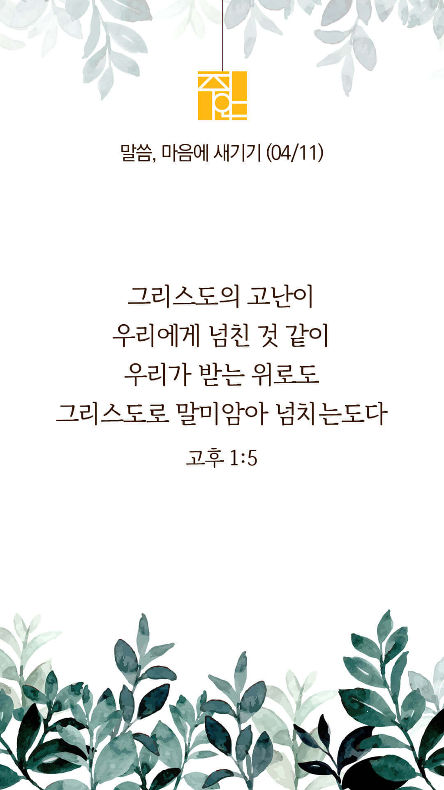
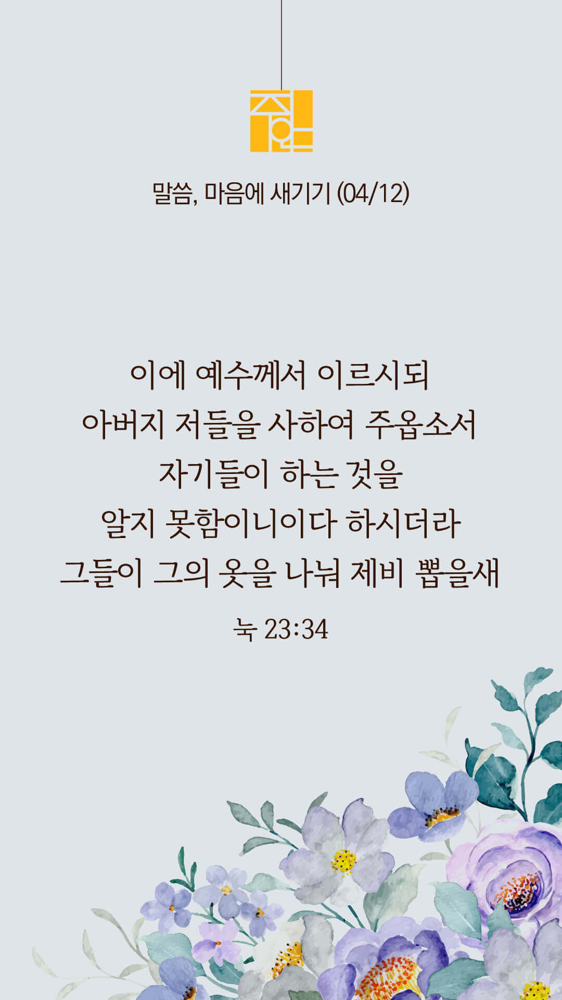
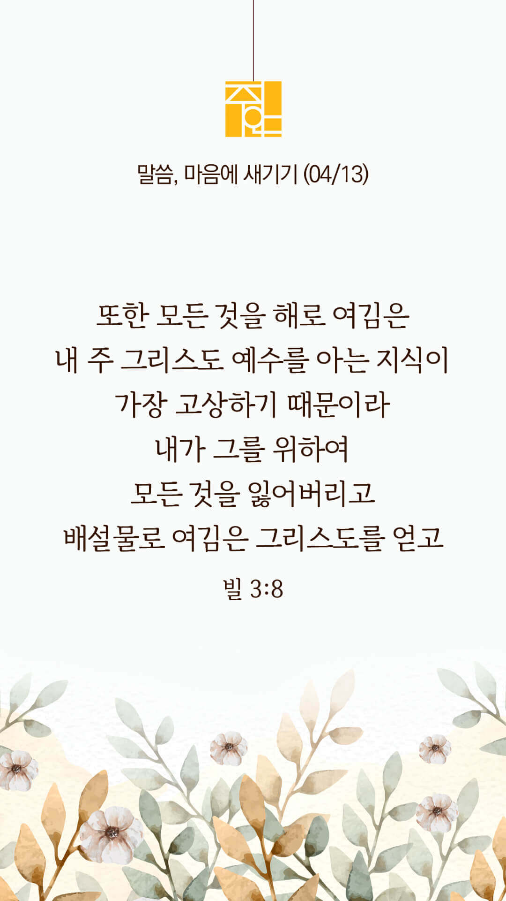
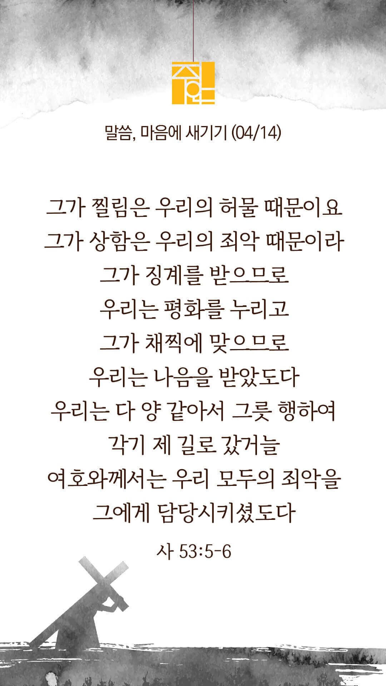
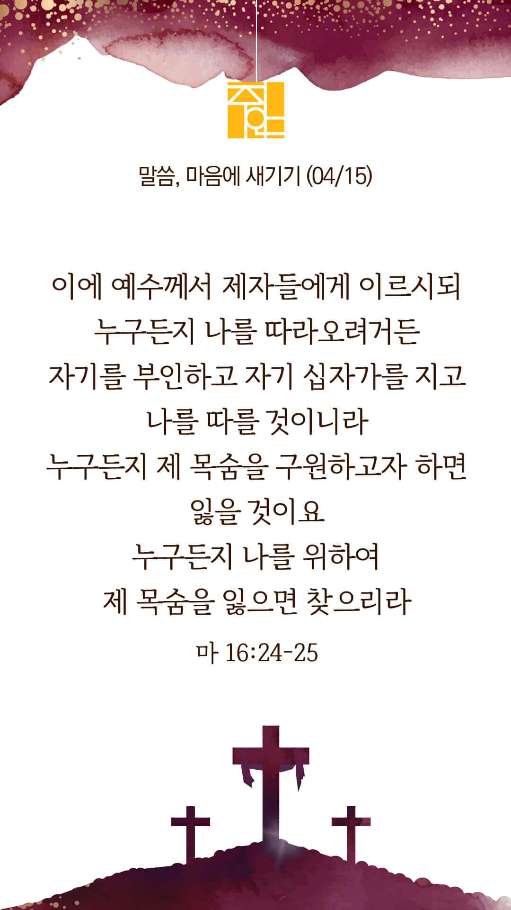
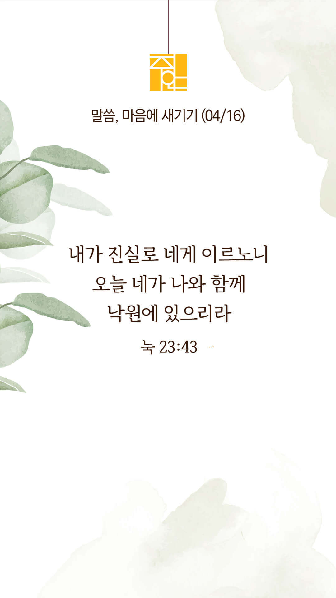

주의 말씀은 내 발에 등이요
내 길에 빛이니이다 (시119:105)
오늘의 말씀입니다
음악 소리가 크면 조절하시기 바랍니다

마음의 묵상
고후 1:5
“그리스도의 고난이 우리에게 넘친 것 같이 우리가 받는 위로도 그리스도로 말미암아 넘치는도다”
1. 그리스도의 고난으로 인해 우리는 무엇을 넘치게 받는다고 말씀하나요?
2. 고난 중에서도 그리스도로 인해 위로를 얻고 계신가요?
3. ‘주님의 고난을 더 깊이 알게 하시어 저의 영혼이 위로와 안식을 얻게 하소서’ 기도합시다
주님의 고난이 저를 치유하셨습니다
주의 말씀은 내 발에 등이요
내 길에 빛이니이다 (시119:105)
오늘의 말씀입니다
음악 소리가 크면 조절하시기 바랍니다

마음의 묵상
눅 23:34
“이에 예수께서 이르시되 아버지 저들을 사하여 주옵소서 자기들이 하는 것을 알지 못함이니이다 하시더라 그들이 그의 옷을 나눠 제비 뽑을새”
1. 예수님은 핍박자들을 위해 어떻게 기도하셨나요?
2. 당신은 억울한 고난을 당하실 때 어떻게 반응하나요?
3. ‘저에게도 용서의 힘, 사랑의 능력을 주세요’ 간절히 기도합시다
예수님의 사랑을 닮게 하소서
주의 말씀은 내 발에 등이요
내 길에 빛이니이다 (시119:105)
오늘의 말씀입니다
음악 소리가 크면 조절하시기 바랍니다

마음의 묵상
빌 3:8
“또한 모든 것을 해로 여김은 내 주 그리스도 예수를 아는 지식이 가장 고상하기 때문이라 내가 그를 위하여 모든 것을 잃어버리고 배설물로 여김은 그리스도를 얻고”
1. 무엇이 가장 고상한 지식이라고 말씀하나요?
2. 당신은 예수님에 대해 얼마나 많은 지식을 가지고 계신가요?
3. ‘주님을 더 깊이 알아가게 하소서’ 간절히 기도합시다
주님을 더 알기 원합니다
주의 말씀은 내 발에 등이요
내 길에 빛이니이다 (시119:105)
오늘의 말씀입니다
음악 소리가 크면 조절하시기 바랍니다

마음의 묵상
이사야 53:5-6
“그가 찔림은 우리의 허물 때문이요 그가 상함은 우리의 죄악 때문이라 그가 징계를 받으므로 우리는 평화를 누리고 그가 채찍에 맞으므로 우리는 나음을 받았도다 우리는 다 양 같아서 그릇 행하여 각기 제 길로 갔거늘 여호와께서는 우리 모두의 죄악을 그에게 담당시키셨도다”
1. 그리스도의 고난은 누구 때문이라고 말씀하나요?
2. 하나님께서 당신의 모든 죄악을 예수님께 담당시키셨음을 믿으시나요?
3. ‘주님의 고난을 통해 제가 나음 받았음을 잊지 않게 하소서’ 묵상하며 기도합시다
그가 채찍에 맞으므로 우리는 나음을 받았도다
주의 말씀은 내 발에 등이요
내 길에 빛이니이다 (시119:105)
오늘의 말씀입니다
음악 소리가 크면 조절하시기 바랍니다

마음의 묵상
마태복음 16:24-25
“이에 예수께서 제자들에게 이르시되 누구든지 나를 따라오려거든 자기를 부인하고 자기 십자가를 지고 나를 따를 것이니라 누구든지 제 목숨을 구원하고자 하면 잃을 것이요 누구든지 나를 위하여 제 목숨을 잃으면 찾으리라”
1. 예수님은 그분을 따르는 자들에게 어떤 요구를 하고 계신가요?
2. 현재 당신이 져야하는 혹은 지고가고 있는 십자가는 무엇인지 묵상해보세요
3. ‘저의 십자가를 기꺼이 지고 주님을 따르게 하소서’ 간절히 기도합시다
십자가의 발자취를 따라갑니다
주의 말씀은 내 발에 등이요
내 길에 빛이니이다 (시119:105)
오늘의 말씀입니다
음악 소리가 크면 조절하시기 바랍니다
